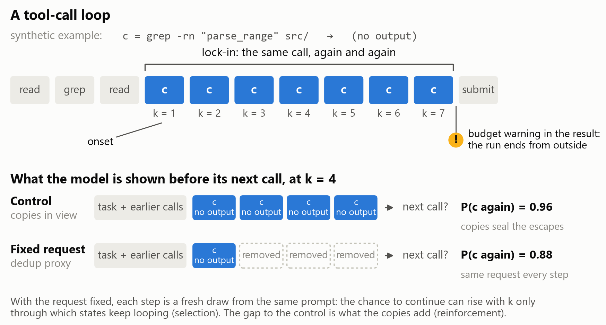
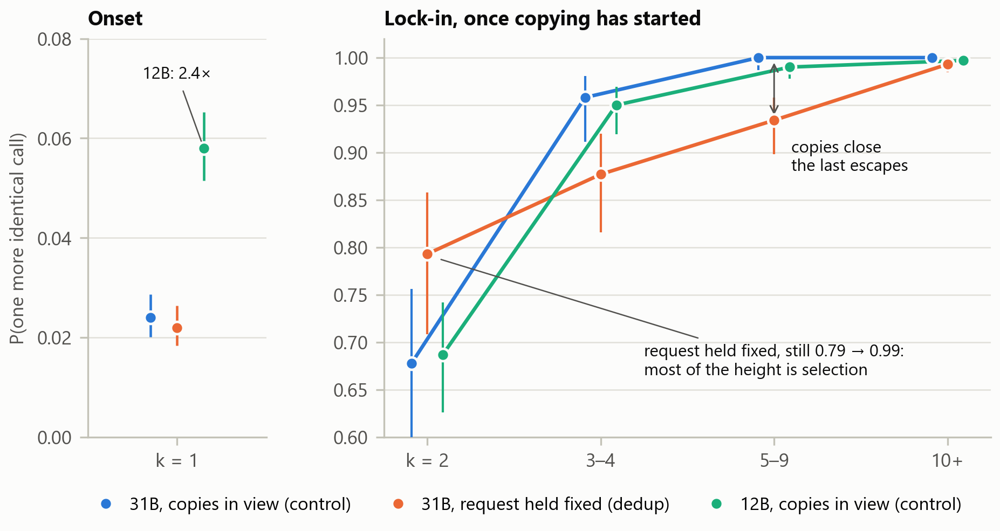
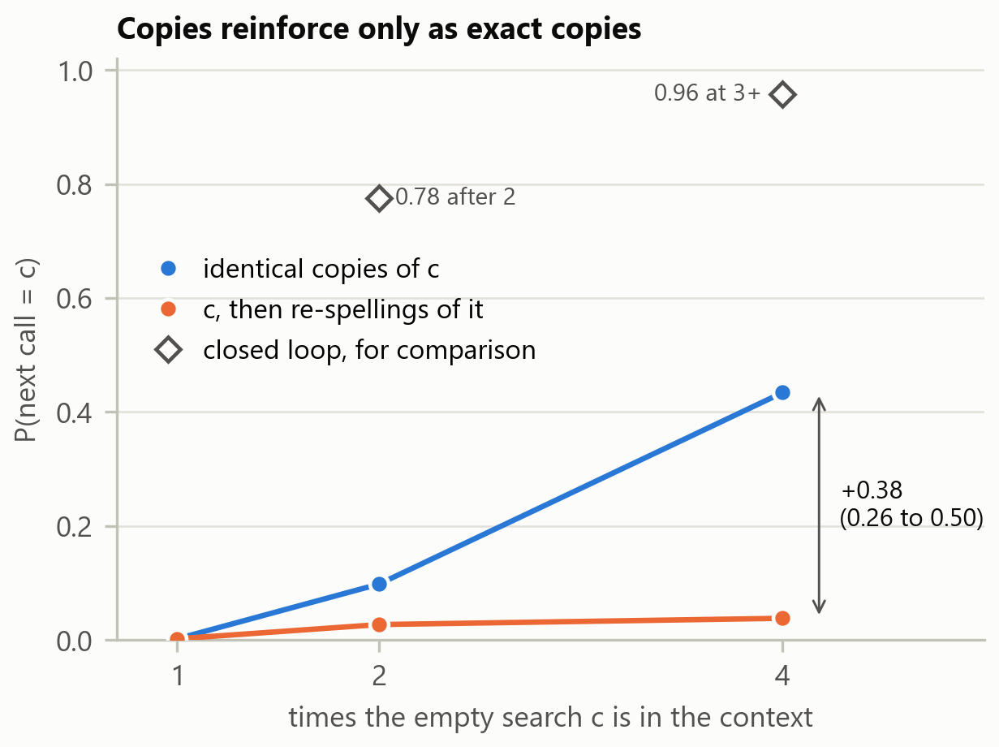
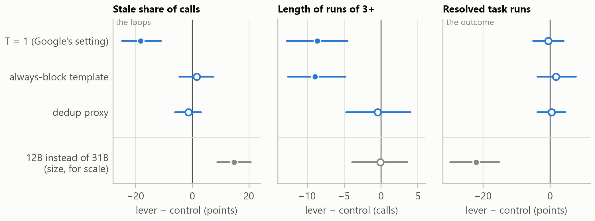
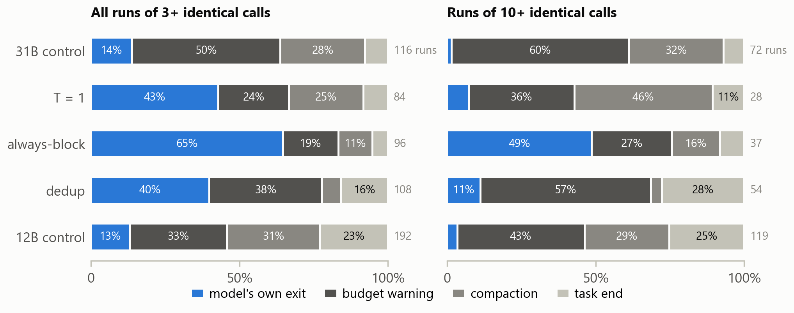
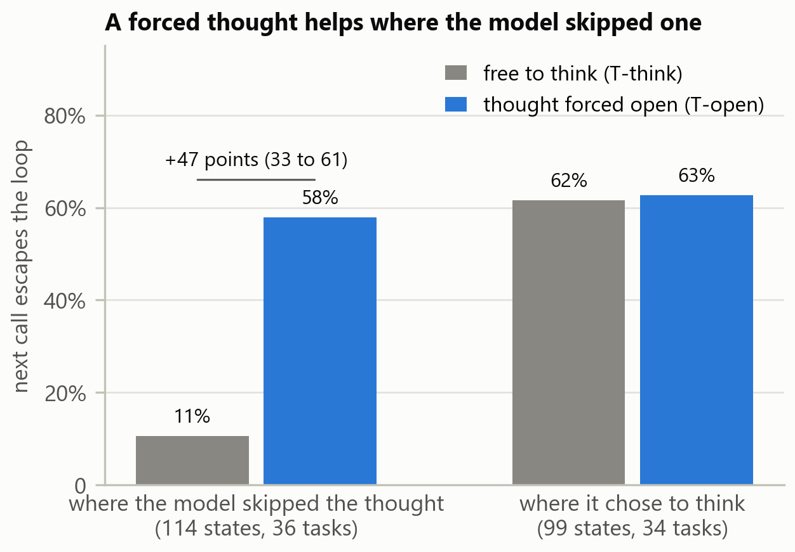
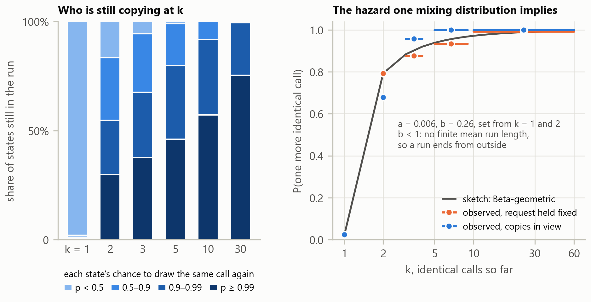

Gemma 4 paper track · loop study · overview for the planning round
Recommended working title: Selected, Then Sealed: Why Gemma 4's Coding Agent Repeats Tool Calls, and Why Breaking the Loop Doesn't Fix the Task
The question: why does Gemma 4 31B, with thinking off, send the same tool call again and again on a coding task, and what breaks the loop?
Task runs that are loop tasks (31B)
24.8%
They resolve 20% of the time, against 37% for the rest.
P(one more identical call), request held fixed
0.78 → 0.99
From the 1st copy to the 10th+: most of lock-in is selection.
Clean steps after the 5th copy that ended a run
0 of 1,342
At T = 0.2, long runs end only from outside.
Resolved under every whole-task lever
71–73 of 218
The levers move the loops, not the outcome.
Setting of every number unless it says otherwise: Gemma 4 31B (int4, w4a16), thinking off, the competition's harness with the pinned off_args zip; T = 0.2, top-p 0.95, top-k 64; 4 minutes, 60 tool calls and 100 turns per task; 109 tasks from fastapi, requests, httpx (70) and rich (39); closed-loop runs on wheelhouse v31, one A100. Intervals are 95%, from resampling tasks.
The study started as an OPSD training plan and became a study of the loops themselves when the self-teacher turned out to share them.
| Arm | What changes | Passes | Resolved | Record |
|---|---|---|---|---|
| Over whole tasks (closed loop): 109 tasks per pass, wheelhouse v31 | ||||
ctrl | Nothing: the 31B with the pinned zip, T = 0.2 | 2 | 72 of 218 | G3 |
ctrl_t1 | T = 1, Google's setting (top-p 0.95, top-k 64) | 2 | 71 of 218 | G3 |
block | Always-block template: the empty thought after every tool response (the edit of HF PR #147) | 1 | 38 of 109 | G3 |
dedup | A token proxy collapses every run of identical tool turns to its first, so the request is fixed through a run | 2 | 73 of 218 | G4 |
ctrl_12b | Gemma 4 12B in the 31B's place (the zip's two model: lines) | 2 | 24 of 218 | control |
| One step ahead (replays): recorded v30 histories, scored in v31's serving environment | ||||
| Gate 1 replay | Teachers (T-think, C-none), a note, a hint, T = 1, fewer copies, at 581 states in 70 tasks | – | – | Gate 1 |
| T-open | The thought forced open for 32 tokens, at 213 looping states in 44 tasks | – | – | loops_reason §5 |
| G1 dose | 1, 2 or 4 identical copies of an empty search, against re-spellings, at 60 histories in 56 tasks | – | – | G1 |
| G2 factorial | Varied IDs × a faithful note, a placebo, the block, the block before every call, at 101 repeat states in 23 tasks | – | – | G2 |
The paper would keep "tool-call loops", with onset and lock-in (literature.md §2). "Return" is dropped unless a section needs it.

| Term | Meaning |
|---|---|
| Run, k | Consecutive identical tool calls; k counts the identical calls so far. |
| Copy · return · stale | A copy repeats the call just before; a return repeats an earlier one; stale calls are both. |
| Loop task | A task run where at least half the calls are bad (stale or malformed). |
| Lock-in hazard | P(one more identical call | the last k calls were identical, the last one well formed). |
| Clean step | No budget warning in the last result, and no compaction before the next call. |
| Onset · lock-in | Onset is the first copy after a fresh call (k = 1); lock-in is continuing once copying has started (k ≥ 2). |
| Escape (one step ahead) | A next call that is neither stale nor malformed. Not a solved task. |
| Control · fixed request | The model sees its copies (ctrl) or the request after the run's first call at every step (dedup). |
Status follows findings.md §2: measured a controlled manipulation, observed a pattern in recorded runs, interpretation a reading of both.
| # | Finding | Status | Evidence | Paper § |
|---|---|---|---|---|
| 1 | Loops are common, and they mark lost runs. A quarter of task runs are loop tasks; they resolve 20% against 37%. At 12B 44.5%, and only in direction (8% against 13%). | observed | G3 §3, §5.3; control §5.8 | 3 |
| 2 | Loops start where the model is already close to certain of the call. With the request held fixed, 78% after the first copy and 99% by the 10th: most of the curve is selection. | measured | G4 §5.1 | 4 |
| 3 | The copies reinforce, on their exact tokens, and close the last escapes. 0.002 → 0.43 for 1 → 4 identical copies, re-spellings flat; in the closed loop 87–93% → 96–100% at 3–9 calls. | measured | G1 §3; G4 §5.1–5.2 | 4 |
| 4 | At T = 0.2, long runs end only from outside. 0 of 1,342 clean steps after 5 copies end a run; exits are the budget warning, a compaction or the task's end. 12B: 4 of 119 runs of 10+ end on their own. | observed | G3 §5.1–5.2; G4 §5.2; control §5.1–5.2 | 5 |
| 5 | The pattern of the context drives the copy, not what the results say. Varied IDs and a faithful note leave it; an instruction and a pattern break move it. | measured | G2; gate1.md §2 | 6 |
| 6 | The model skips thinking where a thought would help. Where it chose not to think, a forced thought escapes 58% against 11%, one step ahead. | measured | loops_reason §5 | 6 |
| 7 | Every whole-task lever changes the loops, not the outcome. T = 1 halves onset, the block fragments runs, dedup lets short runs end; resolution stays at 71–73 of 218. | measured | G3 §4, §5.3; G4 §4, §5.6 | 7 |
| 8 | At T = 0.2, which tasks loop is a property of the task. Not at T = 1; across sizes only in part. | observed | G3 §5.4; G4 §5.4; control §5.5 | 3 |
| 9 | The self-teacher shares the loop, which is why the study left OPSD (KL ratio 0.51). | measured | Gate 1; opsd_assessment | 9 (one sentence) |
| 10 | Size changes how often loops start, not how firmly they hold. The 12B starts copying 2.4× as often after a fresh call, then continues at the 31B's rates. | observed | control §4, §5.1 | 4 |
Candidates for the paper, with a draft caption each. report table means the numbers are in a report file on Explorer; local split means a scratchpad analysis whose script must be brought into the repo before the paper uses it; sketch means a model, not a measurement.

Bars are binomial 95% intervals, which ignore clustering by task; the paper should replace them with task resamples from report_12b_p2/loops.json.
| Clean steps | k = 1 | 2 | 3–4 | 5–9 | 10+ |
|---|---|---|---|---|---|
| 31B, control (2 passes) | 0.024 (4,985) | 0.678 (115) | 0.958 (142) | 1.000 (290) | 1.000 (1,052) |
| 31B, fixed request (dedup, 2 passes) | 0.022 (5,142) | 0.793 (111) | 0.877 (155) | 0.934 (271) | 0.993 (816) |
| 12B, control (2 passes) | 0.058 (4,487) | 0.687 (243) | 0.950 (302) | 0.990 (572) | 0.997 (1,805) |
Steps in brackets. Paired over tasks (all steps): dedup − ctrl −7.0 (−13.3 to −0.8) at 3–4 and −4.1 (−7.3 to −1.1) at 5–9; 12B − 31B +3.2 (+2.2 to +4.2) at k = 1, no later interval excludes 0.

| Arm | p(c), run's sampling | p(c), exact |
|---|---|---|
dose1: c once | 0.002 | 0.006 |
dose2: c twice | 0.098 | 0.052 |
dose4: c four times | 0.434 | 0.307 |
para2: c, then one re-spelling | 0.027 | 0.009 |
para4: c, then three re-spellings | 0.038 | 0.015 |
Paired: dose4 − para4 +0.376 (0.258 to 0.496); dose2 − dose1 +0.096 (0.040 to 0.165). 59 of 60 histories rise monotonically. Closed-loop references are the v30 control's lock-in (0.775 at k = 2, 0.957 at 3+).

| Lever − control | Stale (points) | Run length, 3+ (calls) | Resolved (points) |
|---|---|---|---|
| T = 1 | −18.2 (−24.8 to −11.0) | −8.63 (−12.76 to −4.53) | −0.5 (−5.0 to +4.1) |
| always-block (1 pass) | +1.6 (−4.5 to +7.6) | −8.95 (−12.63 to −4.80) | +1.8 (−3.7 to +7.8) |
| dedup | −1.3 (−6.0 to +3.1) | −0.41 (−4.73 to +4.02) | +0.5 (−3.7 to +4.6) |
| 12B (size) | +14.8 (+8.9 to +20.7) | −0.08 (−3.92 to +3.60) | −22.0 (−29.8 to −15.1) |

| Arm | 3+: own / warning / compaction / task end | 10+: own / warning / compaction / task end |
|---|---|---|
| 31B control (2 passes) | 16 / 58 / 33 / 9 | 1 / 43 / 23 / 5 |
| T = 1 (2 passes) | 36 / 20 / 21 / 7 | 2 / 10 / 13 / 3 |
| always-block (1 pass) | 62 / 18 / 11 / 5 | 18 / 10 / 6 / 3 |
| dedup (2 passes) | 43 / 41 / 7 / 17 | 6 / 31 / 2 / 15 |
| 12B control (2 passes) | 25 / 63 / 60 / 44 | 4 / 51 / 34 / 30 |
The report checks task end, then the budget warning, then a compaction, else "own". The text's 43 / 14 / 1 / 0 counts only well-formed runs of 10+ (58).

| Looping states | T-think escapes | T-open escapes | Paired difference |
|---|---|---|---|
| Skipped the thought (114 states, 36 tasks) | 12 / 114 = 10.5% | 66 / 114 = 57.9% | +47.4 (33.0 to 61.1) |
| Thought (99 states, 34 tasks) | 61 / 99 = 61.6% | 62 / 99 = 62.6% | +1.0 (−6.7 to +9.1) |
Intervals from 20,000 resamples of tasks.

| Fixed request | k = 1 | 2 | 3–4 | 5–9 | 10+ |
|---|---|---|---|---|---|
| Observed | 0.022 | 0.793 | 0.877 | 0.934 | 0.993 |
| Sketch (bin averages weighted by states at risk) | 0.022 | 0.793 | 0.901 | 0.955 | 0.989 |
The first two columns match by construction. The sketch ignores censoring and pools passes; a proper fit is maximum likelihood on per-step counts with task resamples.
The paper's lever table (findings.md §3, condensed). One-step numbers come from different state sets; each cell names its own.
| Lever | One step ahead (replay) | Over whole tasks: the loops | Resolved of 218 |
|---|---|---|---|
| None (control) | – | stale 38.6% of calls; loop tasks 24.8%; runs of 3+ last 19.8 calls | 72 |
| A forced thought (T-open) | escape 57.9% against 10.5% where the model skipped thinking (114 states) | not run | – |
| An instruction (note "Do not run it again"; hint) | p(copy) at 3rd+ copies 0.94 → 0.49 and 0.45 (Gate 1) | not run as such; the harness's budget warning ends 43 of 58 long runs | – |
| A description (faithful note); varied IDs | exact p(c) +0.020 and −0.005 (G2, 101 states): no less copying | not run | – |
| Always-block template | p(c) at copy states 0.791 → 0.216 (G2) | runs 9 calls shorter, +0.35 runs per task; stale +1.6 (−4.5 to +7.6) | 38 of 109 |
The empty thought before every call (think_all) | p(c) back at 0.818: the block is a pattern break | – | – |
| Dedup of the run | at 12 clean states 0.40 → 0.08 (6 tasks) | own exits 47% against 15% of runs; copies −2.6 (−8.2 to +2.8); runs of 10+ per task 0.33 → 0.25 | 73 |
| T = 1 | p(copy) at 3rd+ copies 0.73 (against 0.94) | stale −18.2 (−24.8 to −11.0); loop tasks 24.8% → 9.2%; once under way a run still continues 87% | 71 |
| For scale: the 12B (not a lever) | – | stale +14.8; loop tasks 44.5%; lock-in at 3+ 95.6% against 94.8% | 24 |
The block ran one pass (the control's passes resolved 35 and 37 of 109). G2's wider dedup number (0.79 → 0.07) is withdrawn: it also deleted calls sent before the run. Sources: gate1.md §2, loops_reason_10_13.md §5, ablation_G2.md, ablation_G3.md §4, ablation_G4.md §4–5, ablation_control.md §3.
One paragraph for §4, about 180 words. It borrows a known result: in survival analysis and econometrics, differences between individuals alone make a hazard rise ("frailty"; "heterogeneity against state dependence"). Our fixed-request proxy separates the two by intervention.
loops.json, maximum likelihood by k, task resamples), about half a day; if it fails, drop the Beta and Proposition 2.| References for it | DOI |
|---|---|
| Vaupel, Manton, Stallard. The impact of heterogeneity in individual frailty on the dynamics of mortality. Demography 16(3), 439–454 (1979). | 10.2307/2061224 |
| Weinberg, Gladen. The Beta-Geometric Distribution Applied to Comparative Fecundability Studies. Biometrics 42(3), 547– (1986). | 10.2307/2531205 |
| Heckman. Heterogeneity and State Dependence. In S. Rosen (ed.), Studies in Labor Markets, University of Chicago Press (1981). | book chapter; check before citing |
Recommended
Loops start in states where the model would draw the same call almost every time; its own copies close the few escapes left; only the harness ends them; so breaking the loop leaves the task unsolved.
Novelty: the selection–reinforcement split and how loops end are unmeasured elsewhere, and they explain the null. Quality: an instrument any agent study can use, and the same curve at 12B.
The hazard by run length, with a fixed-request control, splits a loop into selection and reinforcement.
Rejected as the lead: undersells the story and edges toward the Best New Resource award.
Large one-step effects reshape the loops over whole tasks, but resolution stays flat.
Rejected as the lead: the null is already reported (SWE-smith, Gumaan, Liu) and can't rule out ±2 tasks.
Counted: every word a reader sees (title, headings, abstract, body, captions, table cells, references; numbers count). Text inside figure images is not counted, so it stays at axis labels.
| Section | Content (findings) | Words |
|---|---|---|
| Title and subtitle | 25 | |
| Abstract | 170 | |
| 1 Introduction | problem, closest prior work, contributions | 320 |
| 2 Setting and measures | model, harness, tasks, arms; run, k, clean step, hazard; intervals | 280 |
| 3 Loops are common and mark lost runs | 1, 8 | 130 |
| 4 Selected, then sealed | 2, 3, 10; Fig 1; the formal model | 430 |
| 5 Long runs end from outside | 4 | 120 |
| 6 What cues the copy | 5, 6 | 240 |
| 7 Levers over whole tasks | 7; Table 1 | 260 |
| 8 Related work | literature.md §5, Fork-and-Flush, the model's references | 200 |
| 9 Limits and implications | OPSD in one sentence; detectors act at the 3rd–5th copy | 185 |
| Captions and table cells | 320 | |
| References | about 17, compact | 320 |
| Total | 3,000 |
think_all sentence; its stale-drop history goes.| Date | Step |
|---|---|
| Oct 25 | Outline agreed (moved from Oct 23); a placeholder Kaggle writeup created and saved, to test the editor's save bug |
| Oct 26–28 | Figure scripts on the report JSON (task-resampled intervals); the local splits' scripts into the repo; the model fit if approved |
| Nov 1 | First full draft |
| Nov 5 | A complete version submitted early (ties go to the paper entered first) |
| Nov 6–10 | Review and corrections |
| Nov 11 | Final version; Nov 12 23:59 UTC is the deadline |
loop_report.py, the figure scripts and the aggregate report files, no traces; every quoted number from a report or a script in the repo. Weigh the code-sharing rule and the main track (to Dec 2); post the link on the paper-track forum.| File | What it is |
|---|---|
paper/overview.html | This page. |
paper/figures/fig_data.py | Every plotted number, with the record and section it is quoted from (SOURCES). |
paper/figures/make_figures.py | Draws all figures: python paper/figures/make_figures.py. It also prints the model sketch's parameters and bin values. |
paper/figures/fig*.png | 300 dpi, 7.2 in wide (4.6 in for Figs 2 and 5): insert into Word or the Kaggle writeup as they are. |
paper/figures/fig*.svg | The same figures with editable text, for later changes. |
report_12b_p2_1020-2212/loops.json and baseline_*.json on Explorer, and the local splits' scripts should come into the repo.